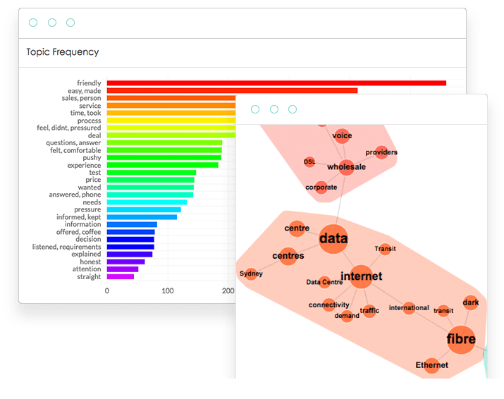
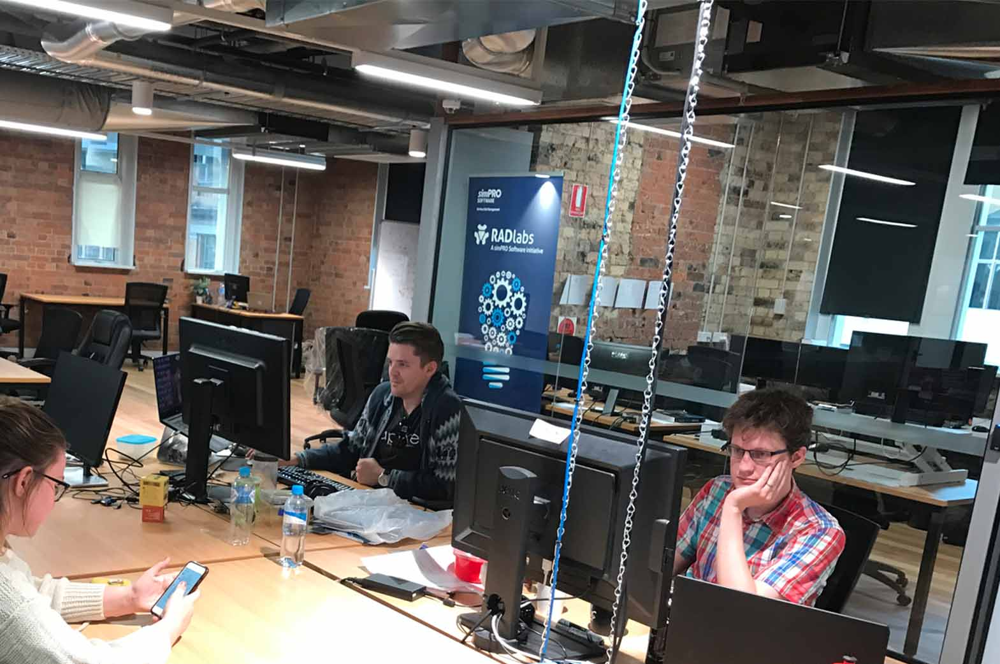
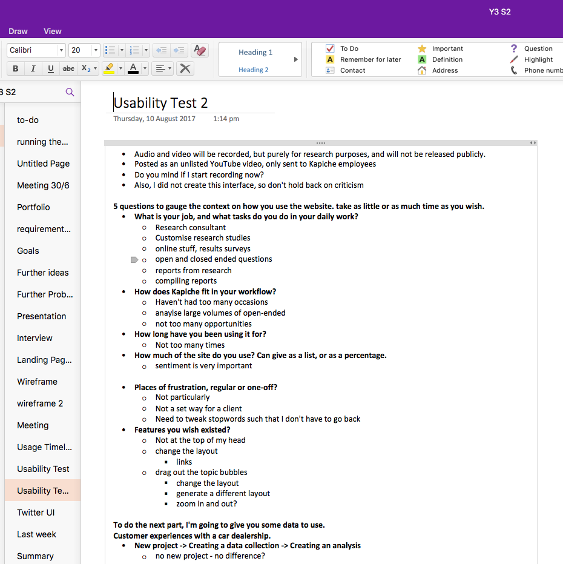
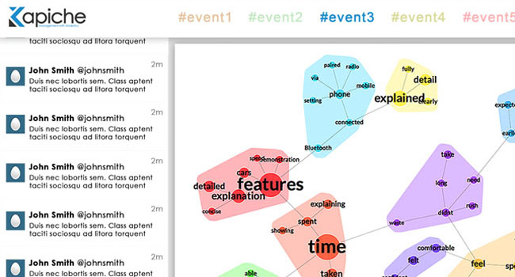

About

It is estimated that 80% of business information is in qualitative form.
Data analysis for unstructured data typically takes much time and resources to analyse and generate visualisations from. Competing data analytics software is very expensive and not an ideal investment for smaller companies with limited resources.
- Kapiche is an analytics and visualisation program that runs directly in the web browser. It offers rich visualisations of excel spreadsheets with qualitative data at a competitive price point for small businesses.
- None of the employees at Kapiche specialised in usability or user experience. My primary task was to develop wireframes, run heuristic evaluations and conduct usability tests to ensure that the interface is usable, understandable, and pleasurable for the user.

Heuristic Evaluation
I conducted a heuristic evaluation of the entire website with another intern.
This involved going through each possible screen and weighing them up against Nielsen’s 10 heuristics for usability design:
- Visibility of system status
- Match between system and the real world
- User control and freedom
- Consistency and standards
- Error prevention
- Recognition rather than recall
- Flexibility and efficiency of use
- Aesthetic and minimalist design
- Help users recognize, diagnose, and recover from errors
- Help and documentation
A document of 50+ usability problems was compiled and suggested solutions were developed for each one. These were placed in a development backlog for addressing later.
{kind=link}
{kind=link}
{kind=link}
{kind=link}
{kind=link}
{kind=link}

Usability Tests
To evaluate the user needs and usability of the product, I conducted a series of one hour usability tests with real world customers. These usability tests were conducted over Google Hangouts. The video stream was recorded, and notes were taken throughout the test.
The usabilty tests were structured as follows:
Open ended questions on the context of their use.
Open ended questions on their thoughts while completing the task.
A cognitive walkthrough of a set of tasks to achieve within a certain time limit.
Statements which reflect Donald Norman’s Usability Goals were read to the user to grade on a Likert scale of ‘Strongly Disagree’ to ‘Strongly Agree’.
Key insights on usability were found during the cognitive walkthrough, such as the structure and working of various tables, and the categorisation of different visualisations.
Results

I thoroughly enjoyed my time at Kapiche and learnt a lot about how the design process works in practice.
Next time, I would improve on the following aspects:
- Involve the entire team to the design process. This would mean conducting workshops on establishing requirements and finding a solution. Collaboration is key to designing and implementing a solution.
- Rely less on intuition for developing wireframes and conduct more usability tests to receive valuable feedback for my designs.
- Sketches were too high fidelity for a design that was not even tested yet. Created a lower fidelity prototype, test first, then use results to move on to a higher fidelity prototype. Instead of Illustrator or Photoshop, use Balsamiq or hand draw prototypes.
After my time there, Kapiche went on to achieve success in growth and new investments:
- Received $100,000 funding from the Queensland Government
- Selected for the River City Labs Startup Accelerator (10 out of 136 startups were accepted).
- Received more customers such as Bendigo and Adelaide Bank which use the product for their business needs.